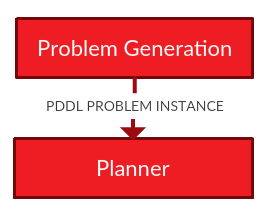

Generating a Problem Instance
The default problem generated is a planning problem in PDDL 2.1 or earlier. The problem is generated by rosplan_planning_system::PDDLProblemGenerator. The default problem generation uses a domain file and the information stored in the Knowledge Management System. This information is requested from the Knowledge Base as described in fetching problem instance. The response is written as a PDDL problem instance.
By default the problem is generated before each planning attempt. This behaviour can be disabled using a parameter, as described in launching the planning system.
The problem is generated, and:
- Written to a file. The file path is specified by a parameter. See launching the planning system.
- Published on a ROS topic.
The PDDL problem instance is published on a ROS topic: /kcl_rosplan/generate_planning_problem. The message type is std_msgs::String.
rosplan_planning_system::PDDLProblemGenerator
The problem instance is (re)generated before each planning attempt. It is generated by requesting an up-to-date model from the Knowledge Base. More information on this can be found in fetching problem instance.
{% highlight c++ linenos=table %} /** * This class is responsible for generating the PDDL instance. * This is done by using the objects already retrieved and stored (see PlanningEnvironment.h). */ #includeThe implementation of the public method generatePDDLProblemFile is shown below:
{% highlight c++ linenos=table %} /** * generates a PDDL problem file. * This file is later read by the planner. */ void PDDLProblemGenerator::generatePDDLProblemFile(PlanningEnvironment &environment, std::string &problemPath) { ROS_INFO("KCL: (PS) Generating PDDL problem file %s", problemPath.c_str()); std::ofstream pFile; pFile.open((problemPath).c_str()); makeHeader(environment, pFile); makeInitialState(environment, pFile); makeGoals(environment, pFile); } {% endhighlight %}